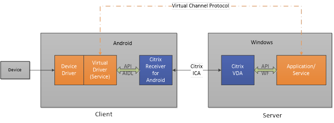

System Requirements¶
The Virtual Channel SDK is based on the Android service binding mechanism. The custom virtual driver must be implemented as a service. The Virtual Channel SDK and Citrix Receiver for Android are delivered in two packages. As required, the Client OS or security software must enable Citrix Receiver for Android to do a secondary launch of the custom virtual driver. For most of Android devices, secondary launch is enabled by default. Yet some devices from specific manufactures have disabled this function by default. For more information, see Known Limitations.
Execution Environment Requirements¶
Server requirement¶
The Android Virtual Channel SDK is supported on Citrix XenApp 6.5 and later, and on Citrix XenDesktop 7.6 and later.
Android client requirement¶
Citrix Receiver for Android 3.11 and later
Architecture¶
A Citrix Independent Computing Architecture (ICA) virtual channel is a bidirectional, error-free connection for the exchange of generalized packet data between a server running Citrix XenApp or XenDesktop, and a client device. You can use virtual channels to add functionality to clients. Uses for virtual channels include:
-
Support for administrative functions
-
New data streams (audio and video)
-
New devices, such as scanners, card readers, and joysticks
Virtual Channel Overview¶
An ICA virtual channel is a bidirectional, error-free connection for the exchange of generalized packet data between a client and a server running XenApp or XenDesktop. Each implementation of an ICA virtual channel consists of two components:
Server-side portion on the computer running XenApp or XenDesktop
The virtual channel on the server side is a normal Win32 process.It can be an application or a Windows NT service.
Client-side portion on the Android device
The client-side custom virtual channel driver executes in the context of the client. You must write your virtual driver. For the Android client, the custom virtual driver must be implemented as a service, communicating with Citrix Receiver for Android through the AIDL interfaces provided in this version of the Virtual Channel SDK. If you want to create several virtual channels, you must implement one virtual driver for each channel.
This figure illustrates the virtual channel client-server connection:

Citrix Receiver for Android is responsible for demultiplexing the virtual channel data from the ICA data stream and routing it to the correct processing module (in this case, the virtual driver). It is also responsible for gathering and sending virtual channel data to the server through the ICA connection. Citrix Receiver for Android does not know any data package detail for each virtual channel and it only transfers all available data between the server and the client virtual driver.
The following is an overview of the client-server data exchange using a virtual channel:
-
The client connects to the server running XenApp or XenDesktop. The client passes information about the virtual channels that it supports to the server.
-
The server-side application starts, obtains a handle to the virtual channel, and optionally queries for additional information about the channel.
-
Both the client-side virtual driver and server-side application can send data initiatively:
-
If the server application has data to send to the client, the data is sent to the client immediately. When the client receives the data, Citrix Receiver for Android demultiplexes the virtual channel data from the ICA stream and passes it immediately to the client virtual driver.
-
If the client virtual driver has data to send to the server, the data is also sent immediately.
-
-
When the ICA session disconnects or something unexpected occurs, such as runtime exceptions or errors, the virtual channel closes and the client virtual driver (service) disconnects from Citrix Receiver for Android.
ICA and Virtual Channel Data Packets¶
Virtual channel data packets are encapsulated in the ICA stream between the client and the server. Because ICA is a presentation-level protocol and runs over several different transports, the virtual channel API enables you to write your protocols without worrying about the underlying transport. The data packet is preserved.
For example, if 100 bytes are sent to the server, the same 100 bytes are received by the server when the virtual channel is demultiplexed from the ICA data stream. The compiled code runs independently of the currently configured transport protocol.
The ICA engine provides the following services to the virtual channel:
Packet encapsulation
ICA virtual channels are packet-based, meaning that if one side performs a write with a certain amount of data, the other side receives the entire block of data when it performs a read. This contrasts with TCP, for example, which is stream-based and requires a higher-level protocol to parse out packet boundaries. Stated another way, virtual channel packets are contained within the ICA stream, which is managed separately by the system software.
Error correction
ICA provides its own reliability mechanisms even when the underlying transport is unreliable. This guarantees that connections are error-free and that data is received in the order in which it is sent.
Receiver and Virtual Driver Interaction¶
In Citrix Receiver for Android, the custom virtual driver is implemented as a service and it must be installed on the Android device before an ICA session is launched. Once a user launches an ICA session, Citrix Receiver for Android binds this service by using the Android API bindService with the BIND\_AUTO\_CREATE flag set. That means that if the service has not been started before the ICA session launches, Citrix Receiver for Android starts this service automatically and the lifecycle of the service is contingent on the ICA session. Only when binding successfully, is the virtual channel created. If the virtual driver service is not bound successfully, the ICA session can still be launched but no virtual channel is created for the virtual driver. So the virtual driver you write must never block or perform time-consuming tasks in the onCreate(), onBind() methods which might increase the risk of binding failure.
For more information about Android service binding and lifecycle, see the Android developer documentation.
The following process occurs when a user starts the client:
-
At client load time, Citrix Receiver for Android finds all the eligible services installed on the device, based on Intent action (see Programming Guide for more information).
-
Citrix Receiver for Android binds all eligible services. If the service is not started, Citrix Receiver for Android starts it. After binding succeeds, Citrix Receiver for Android and the virtual driver service communicate through the Android AIDL interface.
-
For each service, Citrix Receiver for Android calls the canLoad method to verify whether the virtual channel must be created for this virtual driver. If canLoad returns false, Receiver cannot create a virtual channel for it.
-
If canLoad returns true, Citrix Receiver for Android calls getVCName, getMaxVersionNumber, getMinVersionNumber, and getDisplayName to get essential information of this virtual channel. Then it calls initializeDriver to provide the opportunity for the service to do initialization work.
-
If initialization completes successfully, Citrix Receiver for Android creates the virtual channel and calls driverStart.
-
When virtual channel data arrives from the server, Citrix Receiver for Android calls the ICADataArrival method for that virtual driver.
-
To send data, the virtual driver uses sendData callback to send data to the server.
-
If a user disconnects the ICA sessionor something unexpected occurs, such as RuntimeException or an errorduring data transfer, the virtual channel closes and the binding between Citrix Receiver forAndroid and the virtual driver disconnects. Citrix Receiver forAndroid calls driverShutdown to inform the virtual driver. After thevirtual channel closes, data cannot be sent to the server.
Considering the particulars of the Android platform, the virtual driverservice can be collected by the OS when resources are not sufficientafter the ICA session launches. Citrix Receiver for Android has a basic mechanism to try to restart the service and restore the data stream by repeating the steps above and passing blocked data. With this mechanism,in some cases, a user does not need to relaunch the ICA session when the virtual driver is killed. When Citrix Receiver for Android is not aware of the contents of the custom virtual channel package, this mechanism is not reliable. Although the probability is very low, if the virtual driver service is killed after the ICA session launches and thismechanism doesn’t work, the user has to relaunch the ICA session to make the virtual driver work again.
Virtual Channel Packets¶
ICA does not define the contents of a virtual channel packet. The contents are specific to the particular virtual channel and are not interpreted or managed by the ICA data stream manager. You must develop your own protocol for the virtual channel data.
A virtual channel packet can be any length up to the maximum size supported by the ICA connection. This size is independent of size restrictions on the lower-layer transport. These restrictions affect the server-side WFVirtualChannelRead and WFVirtualChannelWrite functions and sendData callback on the client side. The maximum packet size is 5000 bytes (4996 data bytes plus 4 bytes of packet overhead generated by the ICA datastream manager).
Because Citrix Receiver for Android is not aware of the details of the virtual channel package, it passes all available data in the ICA stream to virtual driver by calling icaDataArrival. Data is passed to the virtual driver as a byte array. If the virtual channel package is large enough, the whole package might not arrive at the same time. That means that the implementation of the client virtual driver needs to be able to handle a partial package. See the Ping, Over, and Mix sample code, which provides examples for handling partial packages.
If the server-application sends several packages continuously, more than one package might arrive in the same byte array. The implementation of this method needs to also be able to handle more than one package in the array. See the Over and Mix sample code, which provides examples for handling more than one package in one byte array. For Ping sample, server-application sends data synchronously, the server waits for the client to reply before sending the next packet. Ping sample does not need to handle this scenario.